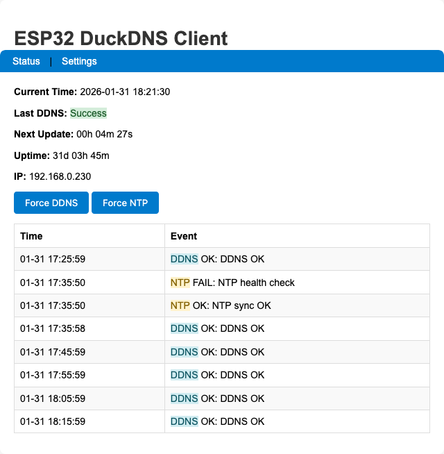
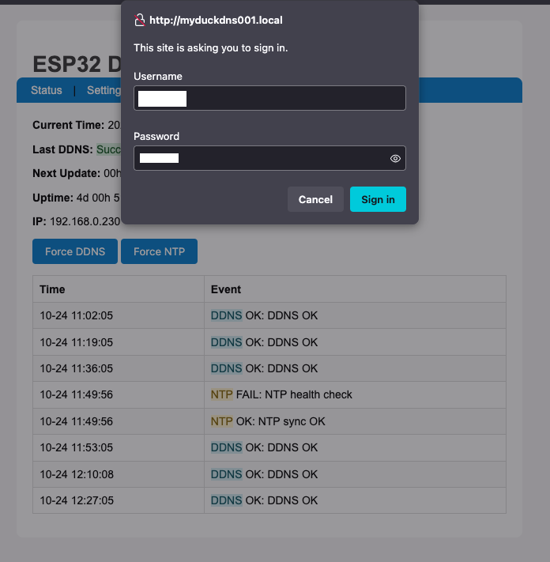
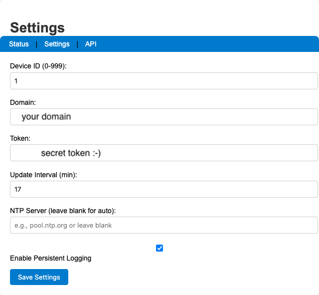
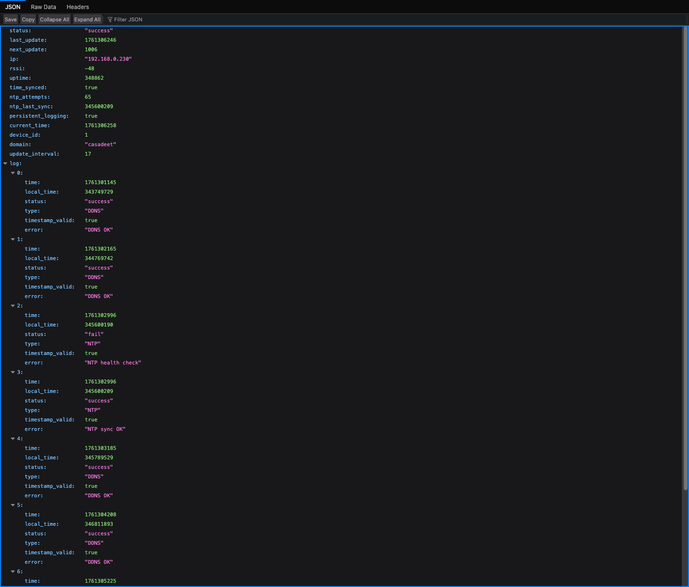

ESP32 DuckDNS Client¶
Standalone DDNS client for DuckDNS.org running on an ESP32 microcontroller. No cloud service, no router dependency.
Overview¶
This project keeps your DuckDNS domain pointed at your home's dynamic IP address using an ESP32 as a dedicated, always-on device. Full-featured firmware with web UI, EEPROM persistence, NTP sync, and a JSON API — runs standalone, no Home Assistant required.
Firmware: firmware/esp32duckdns.ino
Getting Started¶
Hardware¶
Any ESP32 development board works. GPIO 2 is used for status LED output.
Software & Libraries¶
Note
Requires Arduino IDE with the ESP32 board support package installed.
Install via Arduino Library Manager (Sketch › Include Library › Manage Libraries…):
| Library | Author |
|---|---|
WiFiManager |
tzapu |
Ticker |
sstaub |
Flashing¶
- Open
firmware/esp32duckdns.inoin Arduino IDE Tools › Board→ select your ESP32 boardTools › Port→ select the correct COM port- Click Upload
- Open Serial Monitor at 115200 baud
First-Time Setup¶
WiFi Configuration¶
On first boot the ESP32 starts a captive portal:
- Connect to the WiFi network
ESP32-DuckDNSfrom any device - The captive portal opens automatically (or navigate to
192.168.4.1) - Click Configure WiFi, select your network, enter the password
- Click Save — the device reboots and connects
Device Configuration¶
After connecting, find the device on your network:
- Router admin page: look for hostname
testduckXXX(whereXXX= Device ID) - Serial monitor shows the assigned IP on boot
Open the IP in a browser → click Settings → log in with:
| Field | Default |
|---|---|
| Username | user |
| Password | pass |
Configure on the settings page:
- DuckDNS Domain and Token
- Update Interval (minutes)
- NTP Server (optional; falls back to built-in pool)
- Persistent Logging (EEPROM ring buffer, 20 entries)
- Device ID (0–999; sets hostname
testduckNNN)
Click Save Settings — device reboots and starts updating.
Web Interface¶
Status Page¶

Shows current IP, last update time, next update countdown, NTP sync status, WiFi RSSI, and the in-memory log ring.
Settings Page¶


Basic Auth protected (user / pass by default — change ADMIN_USERNAME / ADMIN_PASSWORD in the sketch before flashing).
JSON API¶
GET /api/status — no authentication required.

{
"status": "success",
"last_update": 1754857330,
"next_update": 458,
"ip": "192.168.0.7",
"rssi": -54,
"uptime": 142,
"time_synced": true,
"ntp_attempts": 1,
"ntp_last_sync": 23000,
"persistent_logging": true,
"log": [
{
"time": 1754857211,
"local_time": 21345,
"status": "success",
"type": "SYS",
"timestamp_valid": true,
"error": "Web server started on port 80"
},
{
"time": 1754857330,
"local_time": 140123,
"status": "success",
"type": "DDNS",
"timestamp_valid": true,
"error": "DDNS update successful"
}
]
}
Architecture¶
EEPROM Layout¶
| Offset | Content |
|---|---|
0 |
ddnsConfig struct (~128 bytes), init marker 0x10 |
128 |
Persistent log count (int) + PersistentLogEntry[20] ring |
- EEPROM capacity computed at runtime in
ddnsEEPROMinit()and stored ing_eepromCapacity - Writes are bounds-checked; if computed requirements exceed safe cap, persistent logging is disabled with a warning
- Commits are batched every 30 s via
g_pendingEEPROMCommit; DDNS failures trigger an immediate commit
Logging¶
| Buffer | Location | Size |
|---|---|---|
| In-memory ring | RAM | 8 entries |
| Persistent ring | EEPROM | 20 entries (optional) |
Logs created before NTP sync have timestamp_valid=false. After sync, updatePendingTimestamps() backfills them using the millis() delta.
NTP¶
- Tries
ddnsConfiguration.ntpServerfirst, then round-robinsntpServers[] - Health check runs every 30 minutes via
ntp_health_check_timer - If NTP fails at boot, system proceeds after ~2 min and retries via health checks
Web Endpoints¶
| Route | Auth | Action |
|---|---|---|
/ |
None | Status page |
/settings |
Basic Auth | GET ?save=1 saves config + reboots |
/forcesync |
None | Triggers DDNS update → 302 / |
/forcentp |
None | Triggers NTP sync → 302 / |
/api/status |
None | JSON status blob |
LED Status¶
| Pattern | Meaning |
|---|---|
| Fast blink | WiFiManager AP mode (config portal active) |
| Slow blink | WiFi connecting |
| Steady on | WiFi connected |
| Blink on failure | DDNS update failed (until next success) |
Security¶
Warning
The default credentials are user / pass. Change ADMIN_USERNAME and ADMIN_PASSWORD in the sketch before flashing to a production device.
- Settings page is protected with HTTP Basic Auth
- HTTPS to DuckDNS uses
setInsecure()(no cert validation). For strict TLS, add certificate pinning toWiFiClientSecure
Home Assistant Integration¶
The /api/status JSON endpoint can be polled by a Home Assistant REST sensor to bring device state into HA dashboards and automations.
Add to configuration.yaml:
rest:
- resource: http://DEVICE_IP/api/status
scan_interval: 60
sensor:
- name: "DuckDNS Status"
value_template: "{{ value_json.status }}"
- name: "DuckDNS IP"
value_template: "{{ value_json.ip }}"
- name: "DuckDNS Last Update"
value_template: "{{ value_json.last_update }}"
device_class: timestamp
- name: "DuckDNS RSSI"
value_template: "{{ value_json.rssi }}"
unit_of_measurement: dBm
- name: "DuckDNS Uptime"
value_template: "{{ value_json.uptime }}"
unit_of_measurement: s
- name: "DuckDNS Free Heap"
value_template: "{{ value_json.free_heap }}"
unit_of_measurement: bytes
Force a DDNS update from HA with a REST command button:
rest_command:
duckdns_force_sync:
url: http://DEVICE_IP/forcesync
method: GET
duckdns_force_ntp:
url: http://DEVICE_IP/forcentp
method: GET
Replace DEVICE_IP with your device's IP address or testduckNNN.local hostname.
Key Constants¶
| Constant | Value | Notes |
|---|---|---|
EEPROM_SIZE |
512 |
Base; actual capacity computed at runtime |
DDNS_LOG_SIZE |
8 |
RAM log ring entries |
PERSISTENT_LOG_SIZE |
20 |
EEPROM ring entries |
MIN_FREE_HEAP |
8192 |
Triggers ESP.restart() on memory pressure |
NTP_TIMEZONE |
UK (GMT0BST,…) |
Change for other regions |
Troubleshooting¶
- NTP fails at boot
- System proceeds after ~2 minutes and retries every 30 min via health checks.
- DuckDNS not updating
- Verify domain and token on the Settings page. Check Serial Monitor for error logs.
.localhostname not resolving- Use the device's IP address instead. mDNS may not work on all routers.
- Persistent log disabled after boot
- Computed EEPROM footprint exceeded safe cap — firmware logged a warning and disabled persistent logging to avoid corruption.
Changelog¶
- Reduced EEPROM data sizes; total EEPROM size = 512 bytes
- Optional persistent logging to EEPROM with batched commits (30s or on critical failure)
- In-memory log ring (8 entries) and timestamp backfill after NTP sync
- NTP multi-server fallback and periodic health checks
- Memory pressure monitoring with defensive restart on very low heap
- Safer string handling and bounded buffers
- Simplified web UI; Basic Auth on Settings page
- Hostname derived from device ID:
testduckNNN - Fixed EEPROM overflow and corruption risk: firmware computes required EEPROM capacity at startup, calls
EEPROM.begin()with a safe size (capped), tracksg_eepromCapacity, and validates persistent-log write addresses - Fixed timestamp backfill bug:
updatePendingTimestamps()now correctly marks corrected timestamps as valid - Centralized EEPROM commit state and log indexing via shared
g_persistentLogCount - Safer persistent logging fallback: disables with warning if EEPROM requirements exceed safe cap
License¶
MIT License — see LICENSE.
Adapted from the original ESP8266 DuckDNS client by Davide Gironi (davidegironi.blogspot.com).